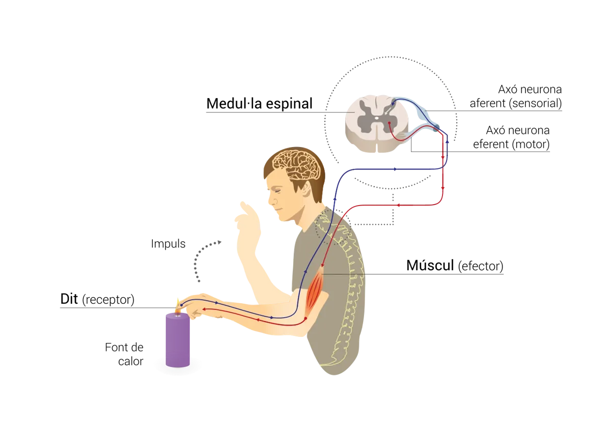
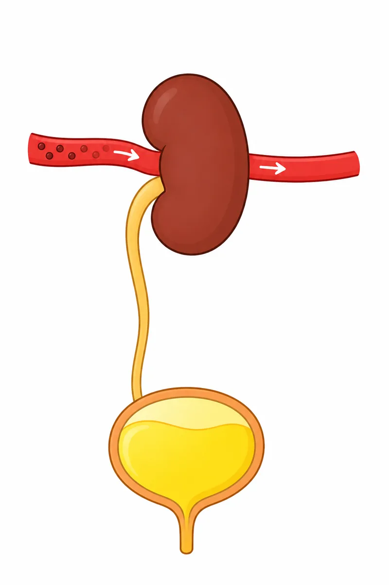
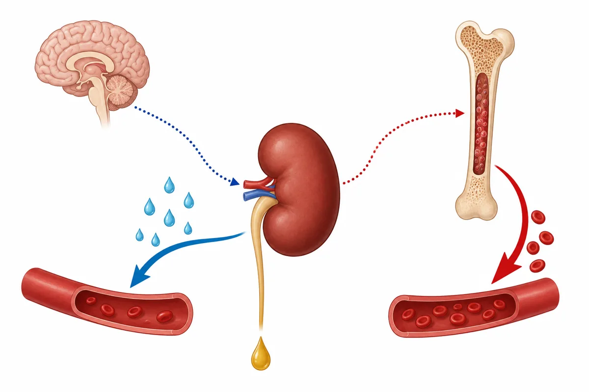

0 · Idees prèvies — qui mana al cos i on van els residus
Marca la teva hipòtesi
Per on creus que el cos elimina la urea, les sals i l'aigua que sobren? Marca'n tantes com vulguis (després ho dibuixes a la fitxa).
1 · Tres estacions — com dóna ordres el teu cos
Estació A · Quant triga una ordre a fer el viatge?
A classe, la teva parella subjecta el regle pel 30 i el deixa caure sense avisar. Tu tanques la mà tan de pressa com puguis. Anota en quin número l'has agafat: aquells centímetres són el temps que ha trigat el senyal a anar de l'ull al cervell i del cervell als dits. Aquí el regle el deixa caure l'ordinador.
Prem «Preparat» i mira el regle. Quan comenci a caure, tanca la mà.
Taula de conversió
| Distància caiguda | 5 cm | 10 cm | 15 cm | 20 cm | 25 cm | 30 cm |
|---|---|---|---|---|---|---|
| Temps de reacció | 101 ms | 143 ms | 175 ms | 202 ms | 226 ms | 247 ms |
Fes servir la taula per passar els cm a mil·lisegons. Si el teu valor queda entremig, tria el més proper. (La taula ve de la fórmula d = ½·g·t² de la caiguda lliure.)
| Mà dominant · cm | Mà dominant · ms | L'altra mà · cm | L'altra mà · ms |
|---|
Estació B · L'arc reflex en directe
A classe, cada persona del grup fa un paper i es passa una pilota o un tap en l'ordre correcte. Aquí, primer ordena els 5 papers. Toca una targeta per posar-la a la llista (o arrossega-la). Toca-la a la llista per treure-la.
Prova-ho amb la pilota
La imatge de l'arc reflex apareix quan l'ordre dels 5 papers és correcte (porta els noms escrits).

Els cercles verds són els 5 papers: receptor, nervi que puja, medul·la, nervi que baixa i efector. A la fitxa és el peu; la imatge mostra una mà que toca una espelma, però el mecanisme és el mateix.
Primer ordena els 5 papers i comprova l'ordre.
Estació C · Targetes: qui fabrica cada hormona i què fa
Encaixa cada hormona amb la seva glàndula, la situació en què apareix i l'efecte. Compte: hi ha targetes de més (tiroxina i cortisol) que no van a la taula; i dues glàndules poden ser la mateixa. Toca una targeta i després toca la casella (o arrossega-la). Toca una casella plena per treure'n la targeta.
2 · Dues vies de control: el nervi i l'hormona
Mira-ho en un gràfic (esquema)
Imagina un ensurt. Prem el botó i observa què fa cada via al llarg del temps (temps en minuts, escala d'esquema).
Compara les dues vies
| Via NERVIOSA | Via HORMONAL |
|---|
3 · El sistema excretor: el ronyó et manté net per dins
El ronyó com a filtre de la sang

12345Els punts foscos de la sang són la urea. Al dibuix n'hi ha un ronyó, però en tens dos, un a cada costat de la columna.
① Posa nom a cada número (apartat «Dibuixa-ho i explica-ho»):
Un filtre selectiu, no un colador
Les cèl·lules aboquen residus a la sang. Fes passar la sang pel ronyó en dos passos.
Pas 0: tota la sang és a l'esquerra.
Esquema simplificat: les quantitats són il·lustratives.
Connecta els sistemes — l'homeòstasi
① D'on surt exactament el CO₂ que expulses? Completa la respiració cel·lular:
glucosa + O₂ → + + ATP
Les hormones missatgeres del ronyó
L'ADH (del cervell al ronyó) i l'EPO (del ronyó a l'os). Mira el dibuix i després mou el control per veure l'orina.

Esquerra (ADH): el cervell envia el senyal al ronyó, que no deixa marxar l'aigua i la torna a la sang: surt poca orina. Dreta (EPO): el ronyó envia el senyal a l'interior de l'os (la medul·la òssia), on es fabriquen eritròcits nous que van a la sang.
El gir inesperat: ronyó i anèmia
Ordena la cadena EPO → … → cansament d'una persona amb una malaltia del ronyó.
4 · Integració: com es manté estable el medi intern
L'homeòstasi és un bucle
Completa el cercle de l'aigua:
Bec poca aigua →
→ l'aigua de la sang torna a la normalitat →
Torna als objectius — Marca el que has après avui
La tasca per a casa (observar durant un dia què beus i com és la teva orina) i les dades de freqüència cardíaca en repòs són observacions del teu cos: es fan a la fitxa impresa.
Copia-ho a la teva fitxa
Aquest resum ordena les teves dades i respostes com a la fitxa. Copia'l o llegeix-lo i passa-ho a mà a la fitxa impresa.
Prem «Actualitza el resum».